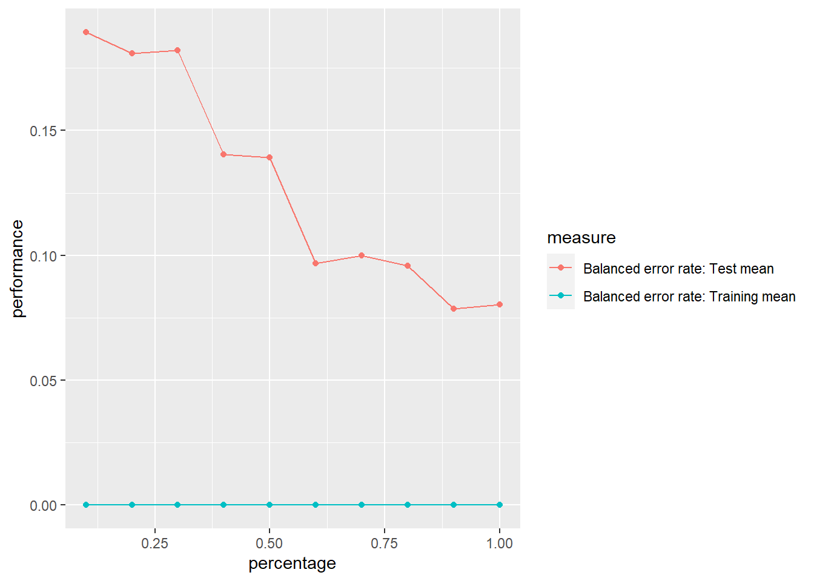
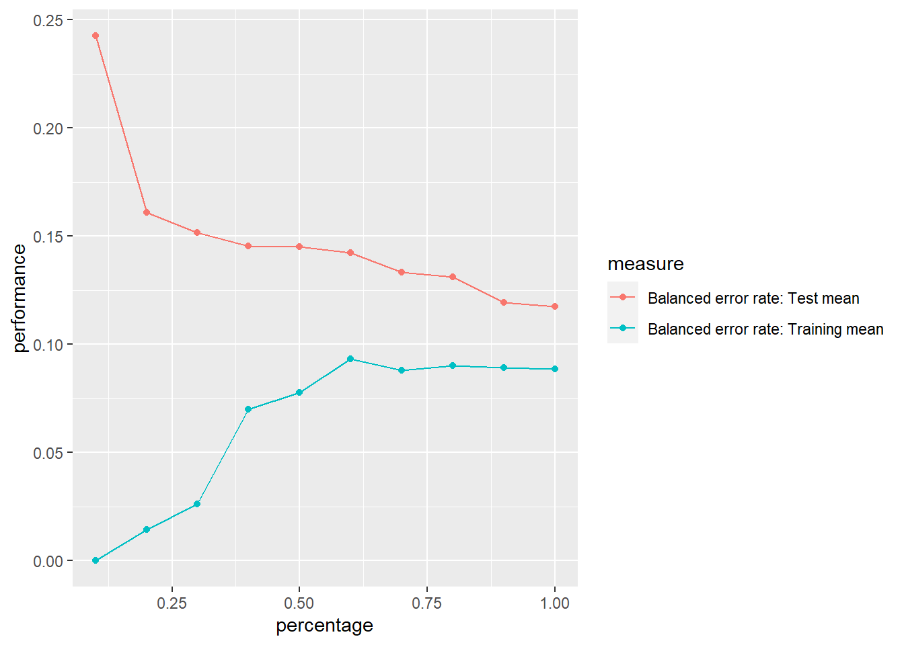

set.seed(123)
datos <- read.csv("train.csv")MD_HDT6
1. Dvisión de variables numéricas y obtención de data de prueba y entrenamiento
1.1 División de variables
1.2 Analisis de NA’s
faltantes_por_col <- colSums(is.na(datos))
faltantes_por_col
0 0 0 0 0
0 0 0 0 0
0 0 0 0 0
0 0 0 0 0
0 0 0 0 0
0 0 0 0 0
Id MSSubClass MSZoning Street
0 0 0 0 0
Alley LotShape LandContour Utilities LotConfig
1110 0 0 0 0
LandSlope Neighborhood Condition1 Condition2 BldgType
0 0 0 0 0
HouseStyle YearBuilt YearRemodAdd RoofStyle RoofMatl
0 0 0 0 0
Exterior1st Exterior2nd MasVnrType ExterQual ExterCond
0 0 0 0 0
Foundation BsmtQual BsmtCond BsmtExposure BsmtFinType1
0 31 31 32 31
BsmtFinType2 Heating HeatingQC CentralAir Electrical
32 0 0 0 1
KitchenQual Functional FireplaceQu GarageType GarageYrBlt
0 0 596 74 74
GarageFinish GarageQual GarageCond PavedDrive PoolQC
74 74 74 0 1189
Fence MiscFeature MoSold YrSold SaleType
967 1156 0 0 0
SaleCondition
0 Se puede observar que PoolQC tiene demasiados datos faltantes, al igual que Fence, Alley, MiscFeature y FireplaceQu. Por lo tanto estas columnas no se usaran.
datos <- select(datos, -Id, -PoolQC, -Fence, -Alley, -MiscFeature, -FireplaceQu)
datos <- na.omit(datos)1.2 Eliminación de variables no significativas
datos <- select(datos, -GarageYrBlt, -SaleType, -SaleCondition, -MoSold, -YrSold, -YearBuilt, -Condition2, -MSSubClass, MSZoning, -LotShape)Se observaron diferentes variables que no aportaban al modelo, por lo tanto se decidió eliminarlas.
1.3 Creación de clasificación de la variable de precios
p33 <- quantile(datos$SalePrice, 0.33)
p66 <- quantile(datos$SalePrice, 0.66)
datosT <- datos
datosT <- datosT %>%
mutate(clasificacion = ifelse(datosT$SalePrice < p33, "Economicas",
ifelse(datosT$SalePrice < p66, "Intermedias",
"Caras"
)
))
datosT$clasificacion <- as.factor(datosT$clasificacion)1.4 Creación de variables dicotómicas
library(fastDummies)
datos_con_dummy <- dummy_cols(datosT, select_columns = c("clasificacion"))
datos_con_dummy <- select(datos_con_dummy, -clasificacion, -clasificacion_Economicas, -clasificacion_Intermedias)
datos_con_dummy$clasificacion_Caras <- datos_con_dummy$clasificacion_Caras
datos_con_dummy<-datos_con_dummy %>% mutate_at(c("clasificacion_Caras"),as.factor)1.5. Modelo con todas las variables
porcentaje <- 0.7
set.seed(123)
numeric_variables2 <- c("LotFrontage", "LotArea", "OverallQual", "OverallCond", "MasVnrArea", "BsmtFinSF1", "BsmtFinSF2", "BsmtUnfSF", "TotalBsmtSF", "X1stFlrSF", "X2ndFlrSF", "LowQualFinSF", "GrLivArea", "BsmtFullBath", "BsmtHalfBath", "FullBath", "HalfBath", "BedroomAbvGr", "KitchenAbvGr", "TotRmsAbvGrd", "Fireplaces", "GarageCars", "GarageArea", "WoodDeckSF", "OpenPorchSF", "EnclosedPorch", "X3SsnPorch", "ScreenPorch", "PoolArea", "MiscVal", "clasificacion_Caras")
datos_num <- select(datos_con_dummy, -SalePrice)
datos_num <- select(datos_con_dummy, -Utilities)
# datos_num <- datos_con_dummy[, numeric_variables2]
corte <- sample(nrow(datos_num), nrow(datos_num) * porcentaje)
train <- datos_num[corte, ]
test <- datos_num[-corte, ]cv <- trainControl(method="cv", number=10)
modelo_todas_cv <- caret::train(clasificacion_Caras~., data=train,method="glm", family = binomial, trControl = cv)Warning: glm.fit: algorithm did not convergeWarning: glm.fit: fitted probabilities numerically 0 or 1 occurredWarning in predict.lm(object, newdata, se.fit, scale = 1, type = if (type == :
prediction from a rank-deficient fit may be misleadingWarning: glm.fit: algorithm did not convergeWarning: glm.fit: fitted probabilities numerically 0 or 1 occurredWarning in predict.lm(object, newdata, se.fit, scale = 1, type = if (type == :
prediction from a rank-deficient fit may be misleadingWarning: glm.fit: algorithm did not convergeWarning: glm.fit: fitted probabilities numerically 0 or 1 occurredWarning in predict.lm(object, newdata, se.fit, scale = 1, type = if (type == :
prediction from a rank-deficient fit may be misleadingWarning: glm.fit: algorithm did not convergeWarning: glm.fit: fitted probabilities numerically 0 or 1 occurredWarning in predict.lm(object, newdata, se.fit, scale = 1, type = if (type == :
prediction from a rank-deficient fit may be misleadingWarning: glm.fit: algorithm did not convergeWarning: glm.fit: fitted probabilities numerically 0 or 1 occurredWarning in predict.lm(object, newdata, se.fit, scale = 1, type = if (type == :
prediction from a rank-deficient fit may be misleadingWarning: glm.fit: algorithm did not convergeWarning: glm.fit: fitted probabilities numerically 0 or 1 occurredWarning in predict.lm(object, newdata, se.fit, scale = 1, type = if (type == :
prediction from a rank-deficient fit may be misleadingWarning: glm.fit: algorithm did not convergeWarning: glm.fit: fitted probabilities numerically 0 or 1 occurredWarning in predict.lm(object, newdata, se.fit, scale = 1, type = if (type == :
prediction from a rank-deficient fit may be misleadingWarning: glm.fit: algorithm did not convergeWarning: glm.fit: fitted probabilities numerically 0 or 1 occurredWarning in predict.lm(object, newdata, se.fit, scale = 1, type = if (type == :
prediction from a rank-deficient fit may be misleadingWarning: glm.fit: algorithm did not convergeWarning: glm.fit: fitted probabilities numerically 0 or 1 occurredWarning in predict.lm(object, newdata, se.fit, scale = 1, type = if (type == :
prediction from a rank-deficient fit may be misleadingWarning: glm.fit: algorithm did not convergeWarning: glm.fit: fitted probabilities numerically 0 or 1 occurredWarning in predict.lm(object, newdata, se.fit, scale = 1, type = if (type == :
prediction from a rank-deficient fit may be misleadingWarning: glm.fit: algorithm did not convergeWarning: glm.fit: fitted probabilities numerically 0 or 1 occurredmodel_summary <- summary(modelo_todas_cv)
print(model_summary, signif.stars = TRUE, digits = 3)
Call:
NULL
Deviance Residuals:
Min 1Q Median 3Q Max
-5.96e-05 -2.00e-08 -2.00e-08 2.00e-08 5.70e-05
Coefficients: (18 not defined because of singularities)
Estimate Std. Error z value Pr(>|z|)
(Intercept) 3.39e+02 4.76e+07 0 1
SalePrice 1.29e+02 1.41e+05 0 1
LotFrontage 9.04e+00 6.55e+04 0 1
LotArea 6.11e-01 1.50e+05 0 1
OverallQual -1.55e-01 8.20e+04 0 1
OverallCond -5.26e+00 8.28e+04 0 1
MasVnrArea 2.45e-01 7.84e+04 0 1
BsmtFinSF1 -6.99e+00 2.25e+05 0 1
BsmtFinSF2 -3.48e+00 1.31e+05 0 1
BsmtUnfSF 1.33e+00 2.53e+05 0 1
TotalBsmtSF NA NA NA NA
X1stFlrSF -1.35e+01 1.81e+05 0 1
X2ndFlrSF -6.66e+00 1.67e+05 0 1
LowQualFinSF 8.37e+00 6.08e+04 0 1
GrLivArea NA NA NA NA
BsmtFullBath -2.31e+00 4.43e+04 0 1
BsmtHalfBath 4.02e+00 3.05e+04 0 1
FullBath -5.59e+00 8.85e+04 0 1
HalfBath 8.44e+00 1.01e+05 0 1
BedroomAbvGr -6.17e+00 6.07e+04 0 1
KitchenAbvGr 4.76e+00 4.56e+05 0 1
TotRmsAbvGrd 2.05e+00 1.20e+05 0 1
Fireplaces -4.57e+00 6.35e+04 0 1
GarageCars -5.53e+00 1.30e+05 0 1
GarageArea 6.97e+00 1.13e+05 0 1
WoodDeckSF -3.62e+00 3.29e+04 0 1
OpenPorchSF 2.96e+00 4.62e+04 0 1
EnclosedPorch -2.31e+00 4.31e+04 0 1
X3SsnPorch -2.53e+00 7.23e+04 0 1
ScreenPorch -6.27e+00 6.99e+04 0 1
PoolArea -1.14e-01 1.02e+05 0 1
MiscVal 4.81e+00 7.75e+04 0 1
MSZoningFV -5.53e+01 8.69e+05 0 1
MSZoningRH -3.85e+01 9.93e+05 0 1
MSZoningRL -6.16e+01 9.38e+05 0 1
MSZoningRM -4.35e+01 1.02e+06 0 1
StreetPave -1.31e+00 1.29e+06 0 1
LandContourHLS -1.50e+01 3.16e+05 0 1
LandContourLow -3.93e+01 7.33e+05 0 1
LandContourLvl -2.53e+01 3.17e+05 0 1
LotConfigCulDSac -1.24e+01 3.38e+05 0 1
LotConfigFR2 -2.35e+01 1.57e+05 0 1
LotConfigFR3 -8.70e-01 4.07e+05 0 1
LotConfigInside -1.50e+01 9.42e+04 0 1
LandSlopeMod 7.59e+00 5.94e+05 0 1
LandSlopeSev 9.60e+01 1.06e+06 0 1
NeighborhoodBlueste 6.75e+01 8.65e+05 0 1
NeighborhoodBrDale 8.32e+01 1.05e+06 0 1
NeighborhoodBrkSide 4.71e+01 5.35e+05 0 1
NeighborhoodClearCr 5.69e+01 7.96e+05 0 1
NeighborhoodCollgCr 5.77e+01 2.14e+05 0 1
NeighborhoodCrawfor 4.46e+01 7.45e+05 0 1
NeighborhoodEdwards 2.80e+01 2.49e+05 0 1
NeighborhoodGilbert 1.72e+01 2.96e+05 0 1
NeighborhoodIDOTRR 5.21e+01 6.38e+05 0 1
NeighborhoodMeadowV 1.44e+02 9.08e+05 0 1
NeighborhoodMitchel 7.11e+01 4.50e+05 0 1
NeighborhoodNAmes 3.25e+01 3.26e+05 0 1
NeighborhoodNoRidge 2.53e+01 2.80e+05 0 1
NeighborhoodNPkVill 1.51e+02 9.19e+05 0 1
NeighborhoodNridgHt 4.72e+01 2.33e+05 0 1
NeighborhoodNWAmes 4.96e+01 4.39e+05 0 1
NeighborhoodOldTown 3.07e+01 5.46e+05 0 1
NeighborhoodSawyer 6.20e+01 5.42e+05 0 1
NeighborhoodSawyerW 4.33e+01 3.37e+05 0 1
NeighborhoodSomerst 2.72e+01 4.64e+05 0 1
NeighborhoodStoneBr 9.90e+01 3.72e+05 0 1
NeighborhoodSWISU 4.58e+01 7.82e+05 0 1
NeighborhoodTimber 4.64e+01 3.63e+05 0 1
NeighborhoodVeenker 6.16e+01 7.03e+05 0 1
Condition1Feedr -2.77e+01 5.88e+05 0 1
Condition1Norm -1.67e+01 4.51e+05 0 1
Condition1PosA -9.44e+01 1.34e+06 0 1
Condition1PosN 4.66e+01 6.76e+05 0 1
Condition1RRAe 1.93e+01 6.26e+05 0 1
Condition1RRAn -6.10e+01 5.93e+05 0 1
Condition1RRNe NA NA NA NA
Condition1RRNn -4.72e+01 4.75e+07 0 1
BldgType2fmCon -3.74e+01 9.88e+05 0 1
BldgTypeDuplex -1.71e+01 2.14e+06 0 1
BldgTypeTwnhs 1.28e+01 1.93e+05 0 1
BldgTypeTwnhsE 4.98e+00 1.28e+05 0 1
HouseStyle1.5Unf -3.38e+01 8.04e+05 0 1
HouseStyle1Story -7.61e+00 3.46e+05 0 1
HouseStyle2.5Fin -8.82e+01 1.14e+06 0 1
HouseStyle2.5Unf -7.62e+01 2.27e+06 0 1
HouseStyle2Story -2.91e+01 3.28e+05 0 1
HouseStyleSFoyer 2.83e+01 6.96e+05 0 1
HouseStyleSLvl -3.27e+01 6.68e+05 0 1
YearRemodAdd1951 4.06e+01 5.31e+05 0 1
YearRemodAdd1952 7.88e+01 1.37e+06 0 1
YearRemodAdd1953 -1.11e+01 1.32e+06 0 1
YearRemodAdd1954 -5.34e+01 1.39e+06 0 1
YearRemodAdd1955 2.11e+01 1.62e+06 0 1
YearRemodAdd1956 3.22e+01 3.97e+05 0 1
YearRemodAdd1957 5.32e+01 6.39e+05 0 1
YearRemodAdd1958 -5.02e+00 5.07e+05 0 1
YearRemodAdd1959 -2.56e+01 7.70e+05 0 1
YearRemodAdd1960 5.45e+01 1.14e+06 0 1
YearRemodAdd1961 2.91e+01 1.53e+06 0 1
YearRemodAdd1962 -5.53e+01 9.72e+05 0 1
YearRemodAdd1963 -5.17e+01 8.54e+05 0 1
YearRemodAdd1964 -1.64e+01 5.85e+05 0 1
YearRemodAdd1965 2.13e+01 4.96e+05 0 1
YearRemodAdd1966 -4.53e+01 5.02e+05 0 1
YearRemodAdd1967 3.85e+01 6.60e+05 0 1
YearRemodAdd1968 2.87e+01 6.97e+05 0 1
YearRemodAdd1969 -1.24e+01 4.13e+05 0 1
YearRemodAdd1970 1.36e+01 7.11e+05 0 1
YearRemodAdd1971 2.42e+01 7.73e+05 0 1
YearRemodAdd1972 -5.39e+00 4.85e+05 0 1
YearRemodAdd1973 -1.55e+01 4.65e+05 0 1
YearRemodAdd1974 -5.62e+01 7.72e+05 0 1
YearRemodAdd1975 -6.34e+00 3.93e+05 0 1
YearRemodAdd1976 -3.16e+01 4.94e+05 0 1
YearRemodAdd1977 -4.24e+01 7.48e+05 0 1
YearRemodAdd1978 9.80e+00 7.45e+05 0 1
YearRemodAdd1979 2.31e+01 6.75e+05 0 1
YearRemodAdd1980 1.84e+01 6.36e+05 0 1
YearRemodAdd1981 1.05e+01 7.12e+05 0 1
YearRemodAdd1982 -1.69e+01 8.01e+05 0 1
YearRemodAdd1983 -3.82e+01 6.80e+05 0 1
YearRemodAdd1984 4.50e+01 9.58e+05 0 1
YearRemodAdd1985 3.33e+00 5.32e+05 0 1
YearRemodAdd1986 -3.16e+01 4.75e+07 0 1
YearRemodAdd1987 -3.27e+01 6.72e+05 0 1
YearRemodAdd1988 2.24e+01 4.21e+05 0 1
YearRemodAdd1989 8.87e+00 6.66e+05 0 1
YearRemodAdd1990 2.94e+01 4.05e+05 0 1
YearRemodAdd1991 8.42e+00 6.68e+05 0 1
YearRemodAdd1992 1.53e+01 5.41e+05 0 1
YearRemodAdd1993 -2.13e+01 5.74e+05 0 1
YearRemodAdd1994 1.52e+01 5.65e+05 0 1
YearRemodAdd1995 -7.80e+00 4.40e+05 0 1
YearRemodAdd1996 -1.69e+01 3.75e+05 0 1
YearRemodAdd1997 1.69e+01 4.72e+05 0 1
YearRemodAdd1998 1.93e+01 4.15e+05 0 1
YearRemodAdd1999 -1.81e+01 3.93e+05 0 1
YearRemodAdd2000 2.63e+00 4.68e+05 0 1
YearRemodAdd2001 4.34e-01 4.95e+05 0 1
YearRemodAdd2002 3.10e+01 3.72e+05 0 1
YearRemodAdd2003 1.74e+01 4.39e+05 0 1
YearRemodAdd2004 -5.74e+00 3.87e+05 0 1
YearRemodAdd2005 1.70e+01 4.28e+05 0 1
YearRemodAdd2006 1.35e+01 4.08e+05 0 1
YearRemodAdd2007 2.35e+01 4.20e+05 0 1
YearRemodAdd2008 1.84e+01 4.15e+05 0 1
YearRemodAdd2009 1.91e+01 4.73e+05 0 1
YearRemodAdd2010 4.60e+00 5.15e+05 0 1
RoofStyleGable 8.00e+01 1.15e+06 0 1
RoofStyleGambrel 1.33e+02 3.29e+06 0 1
RoofStyleHip 8.50e+01 1.15e+06 0 1
RoofStyleMansard -6.90e-01 4.75e+07 0 1
RoofStyleShed NA NA NA NA
RoofMatlCompShg -1.43e+02 2.56e+06 0 1
RoofMatlMembran -1.79e+02 4.27e+06 0 1
RoofMatlMetal NA NA NA NA
RoofMatlRoll -1.60e+02 2.82e+06 0 1
`RoofMatlTar&Grv` -8.83e+01 3.07e+06 0 1
RoofMatlWdShake -1.57e+02 4.75e+07 0 1
RoofMatlWdShngl -2.79e+02 2.81e+06 0 1
Exterior1stAsphShn NA NA NA NA
Exterior1stBrkComm NA NA NA NA
Exterior1stBrkFace 2.07e-01 2.97e+06 0 1
Exterior1stCBlock -2.41e+01 1.24e+06 0 1
Exterior1stCemntBd 1.68e+02 3.22e+06 0 1
Exterior1stHdBoard -8.77e+00 3.20e+06 0 1
Exterior1stImStucc 1.86e+02 3.60e+06 0 1
Exterior1stMetalSd -3.76e+01 3.36e+06 0 1
Exterior1stPlywood 4.68e-01 3.31e+06 0 1
Exterior1stStone NA NA NA NA
Exterior1stStucco 8.42e+00 3.25e+06 0 1
Exterior1stVinylSd -4.24e+01 3.22e+06 0 1
`Exterior1stWd Sdng` 5.13e+00 3.25e+06 0 1
Exterior1stWdShing 3.03e+01 3.27e+06 0 1
Exterior2ndAsphShn -7.73e+01 4.76e+07 0 1
`Exterior2ndBrk Cmn` -8.70e+01 3.15e+06 0 1
Exterior2ndBrkFace -9.04e+01 2.94e+06 0 1
Exterior2ndCBlock NA NA NA NA
Exterior2ndCmentBd -2.65e+02 3.18e+06 0 1
Exterior2ndHdBoard -6.07e+01 3.12e+06 0 1
Exterior2ndImStucc -2.75e+02 3.48e+06 0 1
Exterior2ndMetalSd -1.09e+01 3.32e+06 0 1
Exterior2ndOther -2.40e+02 3.28e+06 0 1
Exterior2ndPlywood -5.71e+01 3.13e+06 0 1
Exterior2ndStone NA NA NA NA
Exterior2ndStucco -3.73e+01 2.74e+06 0 1
Exterior2ndVinylSd -3.49e+01 3.15e+06 0 1
`Exterior2ndWd Sdng` -8.15e+01 3.11e+06 0 1
`Exterior2ndWd Shng` -1.02e+02 3.08e+06 0 1
MasVnrTypeBrkFace 5.48e+01 1.27e+06 0 1
MasVnrTypeNone 3.69e+01 1.26e+06 0 1
MasVnrTypeStone 5.72e+01 1.31e+06 0 1
ExterQualFa 4.25e+01 7.19e+05 0 1
ExterQualGd 4.46e+01 3.75e+05 0 1
ExterQualTA 3.52e+01 5.38e+05 0 1
ExterCondFa 2.66e+01 4.75e+07 0 1
ExterCondGd 5.31e+01 4.75e+07 0 1
ExterCondPo NA NA NA NA
ExterCondTA 6.80e+01 4.75e+07 0 1
FoundationCBlock -2.29e+01 2.86e+05 0 1
FoundationPConc -1.30e+01 3.68e+05 0 1
FoundationSlab NA NA NA NA
FoundationStone -1.99e+01 2.24e+06 0 1
FoundationWood 6.00e+00 1.15e+06 0 1
BsmtQualFa 8.89e+01 3.68e+05 0 1
BsmtQualGd 4.31e+01 2.07e+05 0 1
BsmtQualTA 6.20e+01 2.92e+05 0 1
BsmtCondGd 1.90e+00 3.30e+05 0 1
BsmtCondPo 1.01e+01 2.49e+06 0 1
BsmtCondTA -2.50e+01 3.31e+05 0 1
BsmtExposureGd 3.43e+01 1.47e+05 0 1
BsmtExposureMn -8.43e-01 1.41e+05 0 1
BsmtExposureNo 1.27e+00 8.39e+04 0 1
BsmtFinType1BLQ -2.81e+00 1.94e+05 0 1
BsmtFinType1GLQ -2.97e+01 1.23e+05 0 1
BsmtFinType1LwQ -2.13e+01 2.88e+05 0 1
BsmtFinType1Rec -2.54e+00 1.85e+05 0 1
BsmtFinType1Unf -2.61e+01 1.73e+05 0 1
BsmtFinType2BLQ 2.78e+01 7.40e+05 0 1
BsmtFinType2GLQ -7.75e+00 6.54e+05 0 1
BsmtFinType2LwQ 1.70e+01 6.89e+05 0 1
BsmtFinType2Rec 6.27e+00 8.01e+05 0 1
BsmtFinType2Unf 1.92e-01 7.10e+05 0 1
HeatingGasA -2.65e+02 1.67e+06 0 1
HeatingGasW -2.65e+02 1.64e+06 0 1
HeatingGrav NA NA NA NA
HeatingOthW NA NA NA NA
HeatingWall NA NA NA NA
HeatingQCFa -4.12e+01 6.67e+05 0 1
HeatingQCGd -1.25e+01 1.19e+05 0 1
HeatingQCPo 2.40e+00 8.33e+05 0 1
HeatingQCTA 5.67e+00 1.96e+05 0 1
CentralAirY -4.21e+01 6.37e+05 0 1
ElectricalFuseF 5.76e+01 6.49e+05 0 1
ElectricalFuseP 6.15e+01 1.25e+06 0 1
ElectricalMix NA NA NA NA
ElectricalSBrkr 2.64e+01 2.32e+05 0 1
KitchenQualFa -1.82e+01 5.04e+05 0 1
KitchenQualGd 3.41e+01 2.13e+05 0 1
KitchenQualTA 3.62e+01 2.69e+05 0 1
FunctionalMaj2 -2.84e+01 1.44e+06 0 1
FunctionalMin1 -4.47e+01 9.55e+05 0 1
FunctionalMin2 -3.45e+00 1.18e+06 0 1
FunctionalMod -6.07e+01 2.06e+06 0 1
FunctionalSev NA NA NA NA
FunctionalTyp -3.53e+01 9.85e+05 0 1
GarageTypeAttchd 2.24e+01 1.23e+06 0 1
GarageTypeBasment 1.78e+01 1.18e+06 0 1
GarageTypeBuiltIn 6.34e+01 1.24e+06 0 1
GarageTypeCarPort 6.17e+01 2.87e+06 0 1
GarageTypeDetchd 7.43e-01 1.27e+06 0 1
GarageFinishRFn -6.23e+00 1.02e+05 0 1
GarageFinishUnf 2.95e+00 1.92e+05 0 1
GarageQualFa -2.89e+01 1.20e+06 0 1
GarageQualGd 1.55e+00 1.53e+06 0 1
GarageQualPo 5.11e+01 4.61e+06 0 1
GarageQualTA -7.86e+00 1.35e+06 0 1
GarageCondFa 5.24e+01 4.04e+05 0 1
GarageCondGd -4.29e+00 9.74e+05 0 1
GarageCondPo 5.25e+00 2.84e+06 0 1
GarageCondTA NA NA NA NA
PavedDriveP -2.96e+01 8.04e+05 0 1
PavedDriveY -1.46e+01 3.44e+05 0 1
(Dispersion parameter for binomial family taken to be 1)
Null deviance: 9.8328e+02 on 764 degrees of freedom
Residual deviance: 4.1550e-08 on 519 degrees of freedom
AIC: 492
Number of Fisher Scoring iterations: 25El modelo indica la significancia de las variable con un *
variables_significativas <- model_summary$coefficients[model_summary$coefficients[, 4] < 0.01, , drop = FALSE]
columnas_significativas <- rownames(variables_significativas[order(abs(variables_significativas[, 1]), decreasing = TRUE), ])
columnas_significativasNULLComo se puede observar al tener el modelo con todas las variables se obteiene que ninguna variable es significativa, por lo tanto se procede a realizar el modelo con las variables numericas y variables que se consideran significativas.
1.5.1 Análisis de correlación y ajuste de modelo
datos_cor <- datos_con_dummy[, numeric_variables]
datos_cor <- select(datos_cor, -SalePrice)
correlacion <- cor(datos_cor)
corrplot(correlacion)
Existe correlación entre las siguientes variables:
- LotFrontage: LotArea, TotalBsmtSF, X1stFlrSF
- LotArea: LotFrontage, TotalBsmtSF, GrLivArea
- OverallQual: TotalBsmtSF, X1stFlrSF, GrLivArea, FullBath, GarageCars, GarageArea
- BsmtFinSF1: BsmtUnfSF, BsmtFullBath
- BsmtUnfSF: BsmtFinSF1
- TotalsmtSF: X1stFlrSF
- X1stFlrSF: TotalBsmtSF
- X2ndFlrSF: GrLivArea
- GrLivArea: X2ndFlrSF, TotRmsAbvGrd
- BsmtFullBath: BsmtFinSF1
- BedRoomAvGr: TotRmsAbvGr
- TotRmsAbvGrd: OverallQual, X2ndFlrSF, FullBath, BedroomAbvGr
- FirePlaces: OverallQual, X1stFlrSF, GrLivArea
- GarageCars: OverallQual, TotalBsmtSF, X1stFlrSF, GrLivArea, FullBath, TotRmsAbvGrd, GarageArea
- GarageArea: OverallQual, TotalBsmtSF, X1stFlrSF, GrLivArea, FullBath, TotRmsAbvGrd, GarageCars
test_1 = select(test, -clasificacion_Caras)
pred <- predict(modelo_todas_cv,newdata = test_1)Warning in predict.lm(object, newdata, se.fit, scale = 1, type = if (type == :
prediction from a rank-deficient fit may be misleadingcaret::confusionMatrix(as.factor(pred),as.factor(test$clasificacion_Caras))Confusion Matrix and Statistics
Reference
Prediction 0 1
0 185 13
1 33 98
Accuracy : 0.8602
95% CI : (0.8179, 0.8958)
No Information Rate : 0.6626
P-Value [Acc > NIR] : 3.098e-16
Kappa : 0.7005
Mcnemar's Test P-Value : 0.005088
Sensitivity : 0.8486
Specificity : 0.8829
Pos Pred Value : 0.9343
Neg Pred Value : 0.7481
Prevalence : 0.6626
Detection Rate : 0.5623
Detection Prevalence : 0.6018
Balanced Accuracy : 0.8658
'Positive' Class : 0
Parece ser que se tiene un buen modelo porque se tiene un accuracy de 0.87. La sensitividad y especificidad son buenas, de 0.89 y 0.83 respectivamente. Algo importante que se debe mencionar es que AIC es bastante alto, de 2717. Como se indicó, el modelo parece ajustarse bien a los datos, pero es necesario analizar el overfitting.
# train <- train[, numeric_variables2]
datos.task = makeClassifTask(data = train, target = "clasificacion_Caras")Warning in makeTask(type = type, data = data, weights = weights,
blocking = blocking, : Empty factor levels were dropped for columns:
Condition1,RoofStyle,RoofMatl,Exterior1st,Exterior2nd,ExterCond,Foundation,Heating,Functionalrin2 = makeResampleDesc(method = "CV", iters = 10, predict = "both")
lrn = makeLearner("classif.multinom", predict.type = "prob", trace = FALSE)
lc2 = generateLearningCurveData(learners = lrn, task = datos.task,
percs = seq(0.1, 1, by = 0.1),
measures = list(ber, setAggregation(ber, train.mean)), resampling = rin2,
show.info = FALSE)
plotLearningCurve(lc2, facet = "learner")
Al tener el accuracy con un 86% y al observar las curvas de aprendizaje se puede concluir que el modelo tiene overfitting. La curva de balance de error en training siempre está en 0 y nunca converge con la curva de test. Con un accuracy tan alto y pocas variables significativas, se concluye lo mencionado.
1.6 Modelo con variables numéricas
porcentaje <- 0.7
set.seed(123)
numeric_variables2 <- c("LotFrontage", "LotArea", "OverallQual", "OverallCond", "MasVnrArea", "BsmtFinSF1", "BsmtFinSF2", "BsmtUnfSF", "TotalBsmtSF", "X1stFlrSF", "X2ndFlrSF", "LowQualFinSF", "GrLivArea", "BsmtFullBath", "BsmtHalfBath", "FullBath", "HalfBath", "BedroomAbvGr", "KitchenAbvGr", "TotRmsAbvGrd", "Fireplaces", "GarageCars", "GarageArea", "WoodDeckSF", "OpenPorchSF", "EnclosedPorch", "X3SsnPorch", "ScreenPorch", "PoolArea", "MiscVal", "clasificacion_Caras")
# datos_num <- select(datos_con_dummy, -SalePrice)
# datos_num <- select(datos_con_dummy, -Utilities)
datos_num <- datos_con_dummy[, numeric_variables2]
corte <- sample(nrow(datos_num), nrow(datos_num) * porcentaje)
train <- datos_num[corte, ]
test <- datos_num[-corte, ]cv <- trainControl(method="cv", number=10)
modelo_todas_cv <- caret::train(clasificacion_Caras~., data=train,method="glm", family = binomial, trControl = cv)Warning in predict.lm(object, newdata, se.fit, scale = 1, type = if (type == :
prediction from a rank-deficient fit may be misleading
Warning in predict.lm(object, newdata, se.fit, scale = 1, type = if (type == :
prediction from a rank-deficient fit may be misleading
Warning in predict.lm(object, newdata, se.fit, scale = 1, type = if (type == :
prediction from a rank-deficient fit may be misleading
Warning in predict.lm(object, newdata, se.fit, scale = 1, type = if (type == :
prediction from a rank-deficient fit may be misleadingWarning: glm.fit: fitted probabilities numerically 0 or 1 occurredWarning in predict.lm(object, newdata, se.fit, scale = 1, type = if (type == :
prediction from a rank-deficient fit may be misleading
Warning in predict.lm(object, newdata, se.fit, scale = 1, type = if (type == :
prediction from a rank-deficient fit may be misleading
Warning in predict.lm(object, newdata, se.fit, scale = 1, type = if (type == :
prediction from a rank-deficient fit may be misleading
Warning in predict.lm(object, newdata, se.fit, scale = 1, type = if (type == :
prediction from a rank-deficient fit may be misleadingWarning: glm.fit: algorithm did not convergeWarning: glm.fit: fitted probabilities numerically 0 or 1 occurredWarning in predict.lm(object, newdata, se.fit, scale = 1, type = if (type == :
prediction from a rank-deficient fit may be misleading
Warning in predict.lm(object, newdata, se.fit, scale = 1, type = if (type == :
prediction from a rank-deficient fit may be misleadingmodel_summary <- summary(modelo_todas_cv)
print(model_summary, signif.stars = TRUE, digits = 3)
Call:
NULL
Deviance Residuals:
Min 1Q Median 3Q Max
-6.468 -0.235 -0.044 0.124 2.430
Coefficients: (2 not defined because of singularities)
Estimate Std. Error z value Pr(>|z|)
(Intercept) -2.5159 0.2754 -9.13 < 2e-16 ***
LotFrontage 0.0656 0.1780 0.37 0.7125
LotArea 0.4336 0.2955 1.47 0.1423
OverallQual 2.1617 0.3248 6.66 2.8e-11 ***
OverallCond 0.2925 0.1995 1.47 0.1426
MasVnrArea -0.2773 0.2099 -1.32 0.1866
BsmtFinSF1 1.1210 0.5076 2.21 0.0272 *
BsmtFinSF2 0.3277 0.2044 1.60 0.1088
BsmtUnfSF 1.2663 0.4724 2.68 0.0074 **
TotalBsmtSF NA NA NA NA
X1stFlrSF 0.5993 0.4476 1.34 0.1806
X2ndFlrSF 0.9837 0.3927 2.50 0.0123 *
LowQualFinSF -0.1850 0.3094 -0.60 0.5500
GrLivArea NA NA NA NA
BsmtFullBath 0.5332 0.2290 2.33 0.0199 *
BsmtHalfBath 0.1198 0.1493 0.80 0.4223
FullBath 0.7172 0.2474 2.90 0.0037 **
HalfBath 0.3198 0.2341 1.37 0.1719
BedroomAbvGr -0.0549 0.2476 -0.22 0.8244
KitchenAbvGr -0.4582 0.2981 -1.54 0.1243
TotRmsAbvGrd 0.1111 0.3664 0.30 0.7616
Fireplaces 0.0876 0.1772 0.49 0.6208
GarageCars 0.3489 0.4230 0.82 0.4095
GarageArea 0.6500 0.4069 1.60 0.1102
WoodDeckSF 0.0218 0.1625 0.13 0.8930
OpenPorchSF 0.1952 0.1622 1.20 0.2290
EnclosedPorch -0.3416 0.2063 -1.66 0.0977 .
X3SsnPorch 0.1160 0.1105 1.05 0.2936
ScreenPorch -0.0355 0.1558 -0.23 0.8197
PoolArea -0.9021 0.3051 -2.96 0.0031 **
MiscVal 0.3412 0.1542 2.21 0.0269 *
---
Signif. codes: 0 '***' 0.001 '**' 0.01 '*' 0.05 '.' 0.1 ' ' 1
(Dispersion parameter for binomial family taken to be 1)
Null deviance: 983.28 on 764 degrees of freedom
Residual deviance: 326.48 on 736 degrees of freedom
AIC: 384.5
Number of Fisher Scoring iterations: 7Como se puede observar el modelo indica la significancia de las variable con un *, pero nosotros designamos las varibales que tienen un valor de significaia menor a 0.01, las cuales son:
variables_significativas <- model_summary$coefficients[model_summary$coefficients[, 4] < 0.01, , drop = FALSE]
columnas_significativas <- rownames(variables_significativas[order(abs(variables_significativas[, 1]), decreasing = TRUE), ])
columnas_significativas[1] "(Intercept)" "OverallQual" "BsmtUnfSF" "PoolArea" "FullBath" Como se puede hay varias variables que son significativas para el modelo, con lo que teniendo eliminadas las columnas que no aportan al modelo. Hay otras variables como TotalBsmtSF y GrLivArea que no aportan nada al modelo.
1.6.1 Análisis de ajuste de modelo
test_1 = select(test, -clasificacion_Caras)
pred <- predict(modelo_todas_cv,newdata = test_1)Warning in predict.lm(object, newdata, se.fit, scale = 1, type = if (type == :
prediction from a rank-deficient fit may be misleadingcaret::confusionMatrix(as.factor(pred),as.factor(test$clasificacion_Caras))Confusion Matrix and Statistics
Reference
Prediction 0 1
0 198 17
1 20 94
Accuracy : 0.8875
95% CI : (0.8483, 0.9196)
No Information Rate : 0.6626
P-Value [Acc > NIR] : <2e-16
Kappa : 0.7501
Mcnemar's Test P-Value : 0.7423
Sensitivity : 0.9083
Specificity : 0.8468
Pos Pred Value : 0.9209
Neg Pred Value : 0.8246
Prevalence : 0.6626
Detection Rate : 0.6018
Detection Prevalence : 0.6535
Balanced Accuracy : 0.8776
'Positive' Class : 0
Parece ser que se tiene un buen modelo porque se tiene un accuracy de 0.89. La sensitividad y especificidad son buenas, de 0.89 y 0.83 respectivamente. Algo importante que se debe mencionar es que AIC es bastante alto, de 2717. Como se indicó, el modelo parece ajustarse bien a los datos, pero es necesario analizar el overfitting.
datos.task = makeClassifTask(data = train, target = "clasificacion_Caras")
rin2 = makeResampleDesc(method = "CV", iters = 10, predict = "both")
lrn = makeLearner("classif.multinom", predict.type = "prob", trace = FALSE)
lc2 = generateLearningCurveData(learners = lrn, task = datos.task,
percs = seq(0.1, 1, by = 0.1),
measures = list(ber, setAggregation(ber, train.mean)), resampling = rin2,
show.info = FALSE)
plotLearningCurve(lc2, facet = "learner")
Al tener el accuracy con un 89% y al observar las curvas de aprendizaje se puede concluir que el modelo tiene NO tiene overfitting. La curva de balance de error en training y de test convergen en cierto punto y se quedan relativamente constantes. Esto es lo que indica que tanto test como train son similares, por lo que es probable que NO haya overfitting con las variables numéricas únicamente.